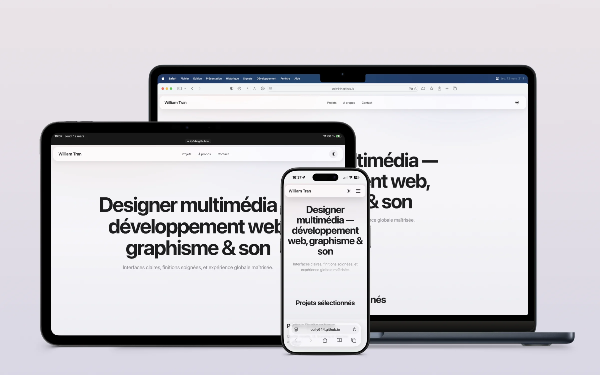
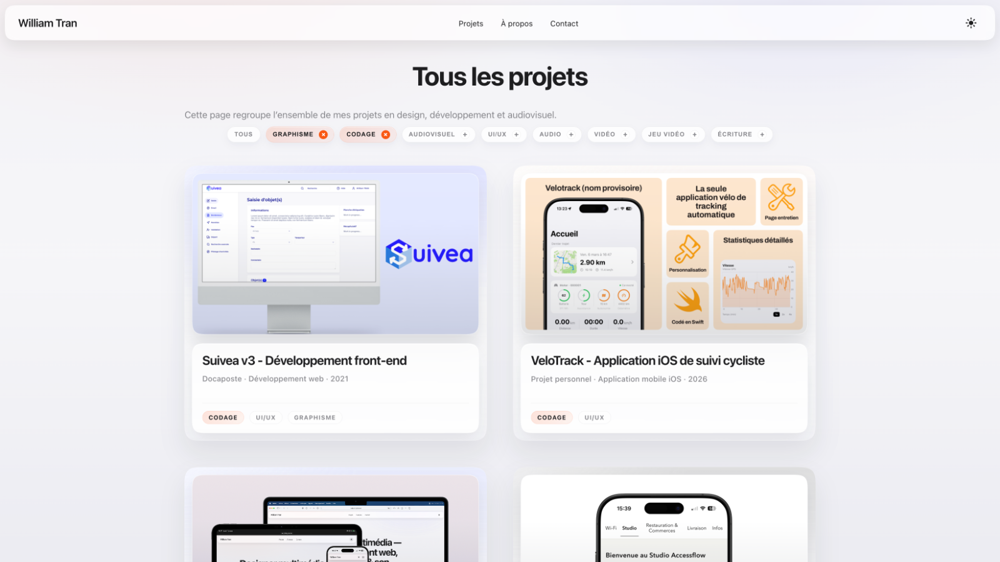
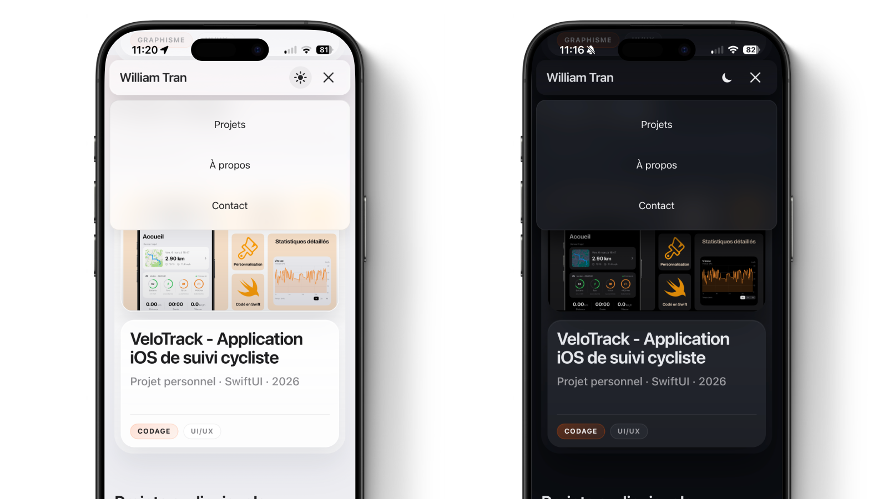

Portfolio design & development
A portfolio designed like a product: clear navigation, strong hierarchy and a front-end foundation that stays easy to evolve.

Project summary
This portfolio was designed as a reading tool for my work. The goal was not simply to line up projects, but to help people quickly understand my profile and then move into the right level of detail without getting lost in pages that are too long or poorly structured.
I focused mainly on information order, page structure and visual continuity across sections, with particular attention to reading comfort.
Main challenge
The real issue was not just to "make a personal website", but to organize information so that people can quickly understand my profile, filter according to their needs, and then reach the right level of detail without losing their way.
Goals
- Structure projects by categories such as graphic design, development and audiovisual work
- Allow fast filtering by tags on a dedicated page
- Keep visual consistency in both light and dark mode
- Ensure a smooth experience on desktop and mobile
Architecture & interface
The site relies on a lightweight multi-page structure built with plain HTML, CSS and JavaScript, with hierarchical navigation, submenus and consistent project pages. The architecture was designed to reduce friction: direct access to key content, stable visual landmarks, and a readable flow on desktop and mobile.
- Home page: selected projects and quick access to contact
- "All projects" page: full view with multi-tag filters for quick sorting
- "About" page: structured profile summary including background, skills, experience, education and interests
- Standardized project pages: context, role, challenges, results, then previous/next navigation
Most of the work went into reading hierarchy: what to show first, what to summarize, what to detail, and how to keep visual continuity from one page to the next.

Multi-tag filtering with instant updates to the project grid.
UI/UX issues and fixes
Part of the work consisted of fixing visual and interaction problems that appeared during iterations.
- Theme or page flash: theme pre-applied before initial render
- Dark mode navbar contrast: fine tuning of shadows, backgrounds and borders
- Cross-browser rendering differences: radius calibration between Chromium and Firefox/Safari fallbacks
- Desktop and mobile submenus: spacing and hover state corrections
This project mostly taught me that an effective portfolio depends less on visible effects than on a series of discreet adjustments that make navigation more stable, more readable and more pleasant.

Performance & maintainability
- Optimized assets using SVG and WebP, with a media structure that can easily absorb new visuals
- Factorized styles to keep the codebase readable and editable
- Clear file naming to make future project additions easier
Results
- Portfolio published online and fully navigable without dead links
- Faster project filtering depending on what the visitor is looking for, such as UI/UX, audio or video
- A base that is ready to grow with new projects and media
What this project helped me develop
- How to structure portfolio content for fast and clear reading
- A UI/UX approach centered on information hierarchy
- Finishing rigor across navigation, theming and visual consistency details
- A front-end base that stays simple to maintain and expand over time